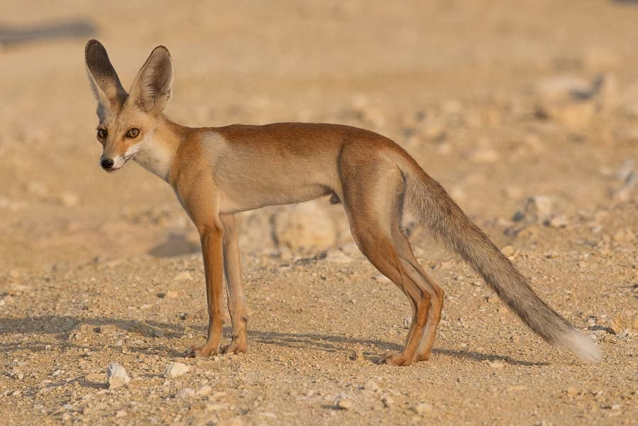
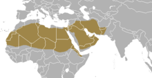
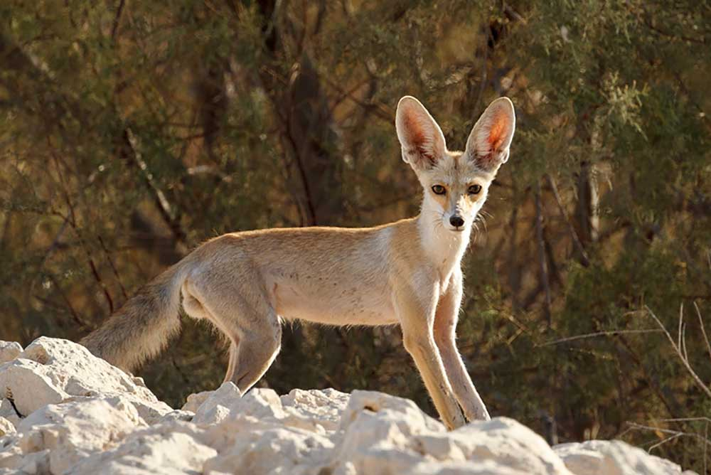

Description of Rüppell's Fox
Appearance
 Rüppell's fox (Vulpes rueppellii), also called Rüppell's sand fox is a small fox, measuring 66 to 74 cm (26 to 29 in) in total length, including a tail measuring 27–30 cm (11–12 in) long. There is no pronounced sexual dimorphism, but males appear slightly larger than females. Both sexes are reported to have an average weight of 1.7 kg (3.7 lb). The coat is sandy in color, ticked with numerous white hairs, and fading from reddish along the middle of the back to pure white on the animal's underparts and on the tip of its tail.
Rüppell's fox (Vulpes rueppellii), also called Rüppell's sand fox is a small fox, measuring 66 to 74 cm (26 to 29 in) in total length, including a tail measuring 27–30 cm (11–12 in) long. There is no pronounced sexual dimorphism, but males appear slightly larger than females. Both sexes are reported to have an average weight of 1.7 kg (3.7 lb). The coat is sandy in color, ticked with numerous white hairs, and fading from reddish along the middle of the back to pure white on the animal's underparts and on the tip of its tail.
Its relatively small legs are beige to fawn in color, with individual black hairs that turn lighter to white towards the legs. The soles are heavily coated with fur that fully covers the pads, an adaptation to extremes of temperature in the desert, that probably helps to distribute its weight and move easily on sand. The back has a black speckling, resulting in a thick black patch at the base of the tail, which is bushy with a white tip. The fur is very soft and fluffy in two coats, a heavier denser winter coat and a thinner summer coat. The females have three pairs of mammae.
Similar to other desert-dwelling foxes, Rüppell's fox has large ears to cool it off. Although adults are too large to confuse with fennec foxes, which live in the same area, young Rüppell's foxes can be confused with adults of that species. The larger ears, however, make them easy to distinguish from red and pale foxes, which also live in some the same areas. In addition, the coat of a Rüppell's fox is much paler than that of a red fox, while pale foxes lack the white tips on their tails.
Habitat
Rüppell's fox is found in the deserts of North Africa south of the Atlas Mountains, from Mauritania and Morocco in the west to Egypt and Djibouti in the east. The species is also found in Algeria, central Niger, Libya, northern Chad, Egypt, southern Sudan, the arid lowlands of Ethiopia and northern Somalia. It is common in Arabia, except on the coast of the Red Sea and in the mountainous outskirts. It is also found in the Arabian Peninsula southwards from Syria, Palestine, Jordan and Iraq, and as far east as Iran, Pakistan, and Afghanistan. Within this region, it prefers sandy or rocky deserts, but may also be found in semiarid steppes and sparse scrub.
It is assumed that the distribution areas have changed historically with desertification and are mainly limited by competition with the red fox (Vulpes vulpes) and by human settlements. In 2007, an expansion of the occurrence of foxes in the United Arab Emirates was documented through the first sighting of the species in Al Dhafra in the Emirate of Abu Dhabi. It seems to avoid the extreme arid regions in the middle of the Sahara, being more abundant on the fringes, in mountain massifs and near oases. Annual rainfall in the region of distribution of the species is normally between 100 and a maximum of 240 mm per year, mostly on the northern edge of the Sahara with a maximum of 150 mm per year.
Behaviour
Rüppell's foxes are monogamous and either crepuscular or nocturnal. They usually spend the day resting in their underground dens, but in winter they are occasionally active during the day. They use two different types of burrows, which are strictly separated: the breeding dens and the resting dens. Outside of the breeding season, these are small dens that can hold only one adult fox, and the fox changes dens frequently, on average about every 4.7 days. Breeding dens are larger, and occupied by a pair of adults and their kits. Such dens can sometimes have more than one entrance, although this is unusual. They make a series of short barks during mating and, at other times, can also produce hisses, trills, and sharp whistles. They have been reported to wag their tails, like domestic dogs.
Rüppell's foxes occupy distinct territories, which they mark with urine, but not with dung as red foxes do. The territories of the members of a mated pair overlap almost completely, but are entirely separate from those of any neighboring pairs. These territories are maintained throughout the year, although the pair occupy separate dens outside of the mating season. The size of the territories varies with the local terrain, but has been reported as around 70 km2 (27 sq mi) in Oman, with those of males being larger, on average, than those of females. The foxes range widely during their nocturnal foraging, travelling over 9 km (5.6 mi) in a night.